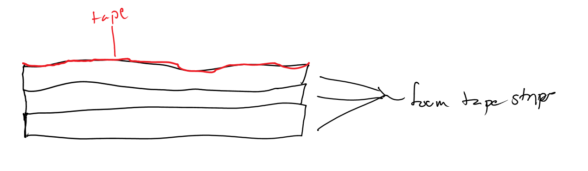

On Febuary 25, we drove our RV to W.E. Pete Ford Middle School, in Allen, TX. The tournament was split into two divisions, and for many of our members, this was our first time encountering that layout. We didn't have any of our team members going to Dean's List interviews this time. We still didn't have an operable cap-ball lift, and this was our first time using our flywheel shooter in a tournament setting.
We did decently in our presentation, but it could have gone better. We made a few missteps in our presentation and had a few stumbles. However, we did a great job of presenting to the judges who were walking around. We would greet judges and attempt to present to them, ending up presenting to two separate groups of judges about our robot's design, helping low-income families in STEM fields, and our team history. As well, we talked to one of the FIRST directors, Ken Johnson, about our MXP, and we ended up bringing him out to it to show off.
In the game, we did pretty well. We ended up 5th place, and got picked as 2nd pick for the 1st alliance. We ended up getting all the way to finals, but we didn't win due to the fact that the opposing alliance had Technical Difficulties on it. During the normal games, we won [3-1]. We had issues with our beacon-pressing erasers falling off, so we designed a new "eraser" out of foam tape with a layer of thick tape on top in order to still be able to press the button. Our robot did stop responding during one game, but compared to our previous experiences, that was actually pretty good.

The reflections post can be viewed here.